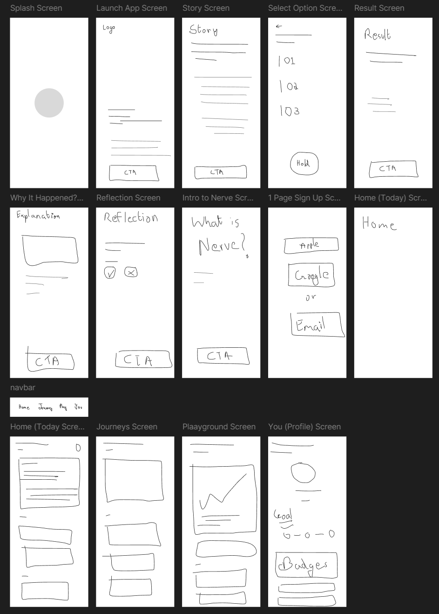
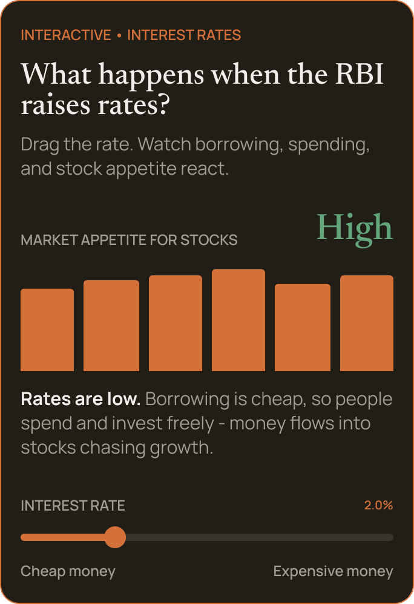
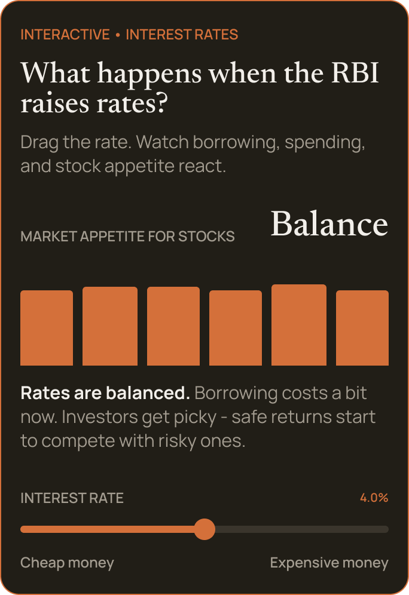
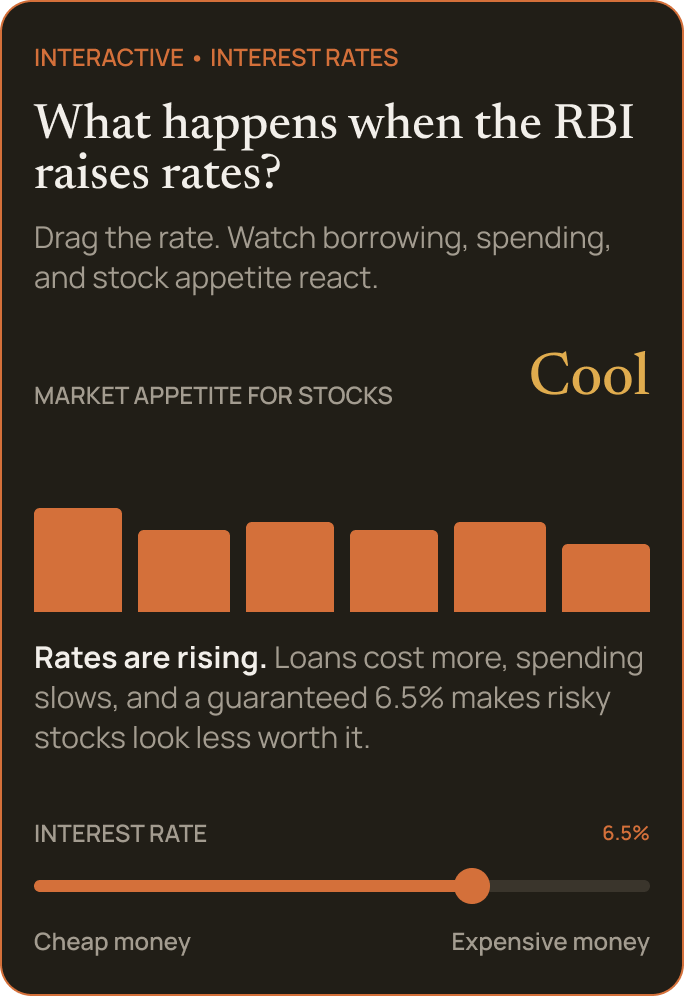
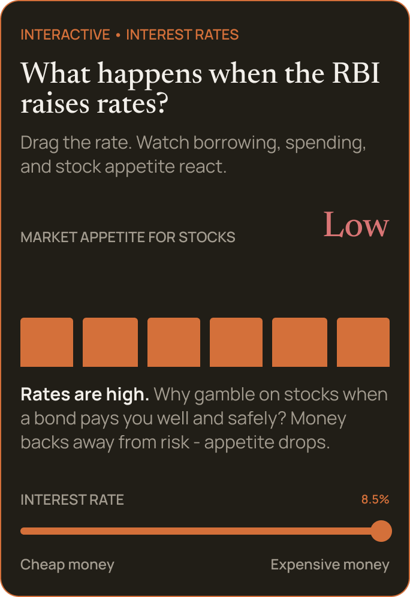

Design Assignment
Nerve.
A 72-hour design assignment submission for the Product Design Intern role at Fam. A learning app that helps teenagers build the confidence to invest by making decisions before they ever risk real money.
What the brief asked for
Design a gamified platform where teens learn the basics, build real skills, and eventually invest real money once they reach a certain level.
Not a faster way to teach investing — a way to make deciding feel safe. A learning app where teenagers make real calls, and see what happens, before any real money is on the line.
The problem, the way I saw it
The brief pointed at awareness. But teens can Google anything, anytime. What actually stops them isn't knowledge — it's confidence. "I'll lose money." "Mera luck nahi hai stocks mein." Those are fear problems, not knowledge ones. So the app shouldn't teach faster; it should make deciding feel safe.
How I researched it
Two inputs, given the time: friends who actually follow the market, and a Deep Research pass to back up a few assumptions.
From two friends
Gen Z jaldi bore ho jaate hai agar long blogs ya bohot words dekh ke.
Kuch interactive features ya competition karna.
If you use memes in notifications, it gets more clicks.
Gemini Deep Research
Tied to Google's Search Index, pointed at five questions:
- Gen Z product behaviour
- Financial learning products
- Indian investment rules for minors
- Gamification in apps
- Light vs. dark mode preference
27-page report — it validated some assumptions, and made me rethink a few others.
The main concept of Nerve.
Most apps teach you first, then test you. Nerve flips it — you make the call before you know the answer, because that's how investing actually works. This loop is the whole product; stories and journeys just sit on top of it.
-
01
Story
Something happens. You get the background.
-
02
Decision
You make the call. No button — just press and hold.
-
03
Time passes
Walk the weeks or years yourself, and watch it happen.
-
04
Result
Find out if you made the right call.
-
05
Explanation
Every scenario has a reason behind it — never a guessing game.
-
06
Reflection
What did you actually take away?
Sketched before it was designed
Before any pixels, I sketched every screen in low fidelity — mapping the full flow and rough UX copy on one sheet.

Walking through the app
Dark, but warm — closer to a well-designed magazine than a flashy game. The fun comes from the interaction and the writing, not the decoration.
Onboarding puts you through it
No explainer screens. A real market moment that already happened, run one decision at a time.


One story a day, four tabs
After the first run, Nerve settles into a simple rhythm — just one story a day, so nobody binges and burns out.


Today for the daily story, Journeys for the big events, Playground to poke at the "why", and You for progress.
No story, no right answer
Pull a lever and watch what moves — drag interest rates up and down, and watch the market's appetite for stocks react.

The same interactive card at four points on the dial — from cheap money to expensive — showing how appetite for stocks rises and falls with the rate.




Identities, not points
You move through five identities — Explorer to Investor Ready. Achievements reward behaviour, not completion.


There's no public leaderboard — so these achievement cards, built to be shared, are how Nerve actually gets seen by other people.
Where it stands
What I'd improve
I'm technically Gen Z myself, but I don't think "fun" has to mean confetti and mascots. Nerve is calm and editorial on purpose — the interaction and the writing do the work, not the decoration. If testing showed this reads as too restrained, I'd loosen it up — but only after testing with real users, not by assuming.
With more time
Learn day trading, charts and technical analysis properly — I cut them because I won't design what I can't defend — and test the whole thing with real teenagers.
The name — Nerve.
Investing takes nerve — the guts to actually make a call. And "nerves" is the feeling I'm trying to calm. Same word, both sides of the problem.